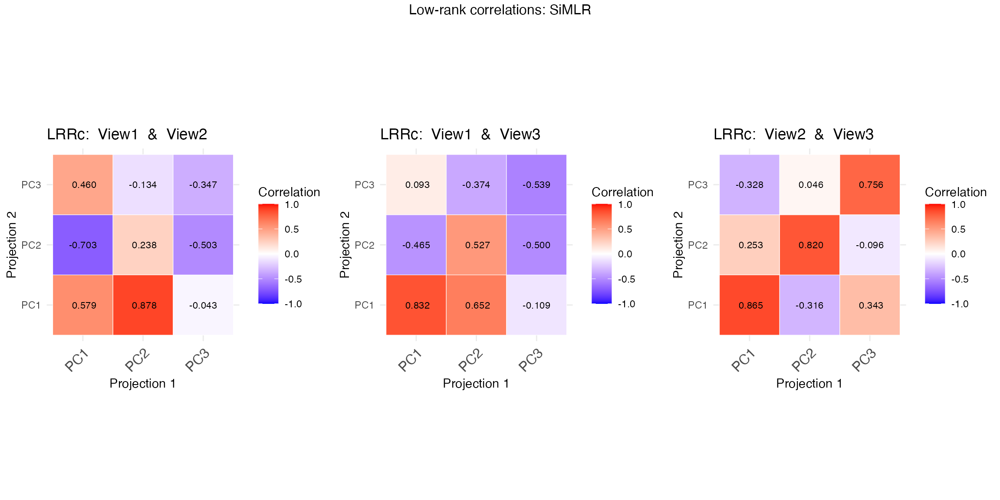

simlr_interpretation
simlr_interpretation.RmdSimilarity-driven multi-view linear reconstruction
Introduction
Similarity-driven multi-view linear reconstruction (SiMLR) is an algorithm that exploits inter-modality relationships to transform large scientific datasets into a smaller joint space. The link between the original data \(X_i\) and the reduced embedding space is a sparse set of features \(v_i\). Standard statistical tools may then be applied on the embeddings \(s_i=X_i v_i\).
SiMLR may be used in a variety of other ways. We will cover a basic example and follow with different use cases. These examples are perhaps less involved than those given in the original publication’s cloud computing examples but illustrate new functionality.
Default SiMLR application
Here’s an expanded and more didactic section for the vignette that introduces the code example, walks through the steps, and includes visualization examples:
Example: Applying SiMLR to Simulated Multi-View Data
In this section, we’ll explore how the Similarity-driven Multi-View Linear Reconstruction (SiMLR) algorithm can be applied to multi-view datasets. We’ll generate synthetic data to simulate the application of SiMLR, compare the results to traditional methods like Singular Value Decomposition (SVD), and visualize the relationships between the views.
Step 1: Simulate Multi-View Data
We begin by simulating three different views of data, each representing different modalities or datasets that share some underlying structure.
library(ANTsR)
#> Warning: replacing previous import 'stats::filter' by 'dplyr::filter' when
#> loading 'ANTsR'
#> ANTsR 0.6.1
#> Environment variables set either in .Renviron or with a seed (e.g. XXX):
#> Sys.setenv(ANTS_RANDOM_SEED = XXX)
#> Sys.setenv(ITK_GLOBAL_DEFAULT_NUMBER_OF_THREADS = 1)
#> may influence reproducibility in some methods. See
#> https://github.com/ANTsX/ANTs/wiki/antsRegistration-reproducibility-issues
#> for more information.Also see *repro methods in antsRegistration.
#>
#> Attaching package: 'ANTsR'
#> The following objects are masked from 'package:stats':
#>
#> sd, var
#> The following objects are masked from 'package:base':
#>
#> all, any, apply, max, min, prod, range, sum
library(reshape2)
set.seed(1500)
nsub <- 25 # Number of subjects/samples
npix <- c(100, 200, 133) # Number of features in each view
nk <- 5 # Number of latent factors
# Generating outcome matrices for each view
outcome <- matrix(rnorm(nsub * nk), ncol = nk)
outcome1 <- matrix(rnorm(nsub * nk), ncol = nk)
outcome2 <- matrix(rnorm(nsub * nk), ncol = nk)
outcome3 <- matrix(rnorm(nsub * nk), ncol = nk)
# Generating transformation matrices for each view
view1tx <- matrix(rnorm(npix[1] * nk), nrow = nk)
view2tx <- matrix(rnorm(npix[2] * nk), nrow = nk)
view3tx <- matrix(rnorm(npix[3] * nk), nrow = nk)
# Creating the multi-view data matrices
mat1 <- (outcome %*% t(outcome1) %*% (outcome1)) %*% view1tx
mat2 <- (outcome %*% t(outcome2) %*% (outcome2)) %*% view2tx
mat3 <- (outcome %*% t(outcome3) %*% (outcome3)) %*% view3tx
colnames(mat1)=paste0("m1.",1:ncol(mat1))
colnames(mat2)=paste0("m2.",1:ncol(mat2))
colnames(mat3)=paste0("m3.",1:ncol(mat3))
# Combine the matrices into a list
matlist <- list(m1 = mat1, m2 = mat2, m3 = mat3)In this code, mat1, mat2, and
mat3 represent three views of the data. Each view is
constructed to share a common underlying structure but with different
transformations applied.
Step 2: Apply SiMLR
Now we apply the SiMLR algorithm to the simulated multi-view data to find a common representation across the views.
# Applying SiMLR
constr='Grassmannx1x1'
constr='Stiefelx1x1'
constr='orthox0.1x0.1'
prepro=c("centerAndScale","np")
result <- simlr(matlist,constraint=constr,scale=prepro, verbose=TRUE)
#> [1] "ortho" "0.1" "0.1"
#> [1] " <0> BUILD-V <0> BUILD-V <0> BUILD-V <0> BUILD-V <0> "
#> [1] "initialDataTerm: -0.858847922761822 <o> mixer: svd <o> E: cca"
#> [1] "Iteration: 1 bestEv: -0.256692917864777 bestIt: 1 CE: -0.256692917864777"
#> [1] "Iteration: 2 bestEv: -0.697875235845201 bestIt: 2 CE: -0.697875235845201"
#> [1] "Iteration: 3 bestEv: -0.697875235845201 bestIt: 2 CE: -0.440609115593719"
#> [1] "Iteration: 4 bestEv: -0.697875235845201 bestIt: 2 CE: -0.446286879475902"
#> [1] "Iteration: 5 bestEv: -0.753229659975718 bestIt: 5 CE: -0.753229659975718"
#> [1] "Iteration: 6 bestEv: -0.753229659975718 bestIt: 5 CE: -0.681335076802565"
#> [1] "Iteration: 7 bestEv: -0.753229659975718 bestIt: 5 CE: -0.50186793727863"
#> [1] "Iteration: 8 bestEv: -0.753229659975718 bestIt: 5 CE: -0.493727230323559"
#> [1] "Iteration: 9 bestEv: -0.753229659975718 bestIt: 5 CE: -0.659484755200271"
#> [1] "Iteration: 10 bestEv: -0.753229659975718 bestIt: 5 CE: -0.682395449925149"
# Projecting data into the reduced space
p1 <- mat1 %*% (result$v[[1]])
p2 <- mat2 %*% (result$v[[2]])
p3 <- mat3 %*% (result$v[[3]])SiMLR identifies a sparse set of features that best reconstruct each
view, resulting in projections p1, p2, and
p3 for each view.
Step 3: Visualization and Comparison
To understand the effectiveness of the SiMLR projections, we can compare the correlations between the projections of different views. Additionally, we’ll compare the results to those obtained via Singular Value Decomposition (SVD).
# Calculate SVD for comparison
svd1 <- svd(mat1, nu = nk, nv = 0)$u
svd2 <- svd(mat2, nu = nk, nv = 0)$u
svd3 <- svd(mat3, nu = nk, nv = 0)$u
# Calculate correlations between the SiMLR projections
cor_p1_p2 <- range(cor(p1, p2))
cor_p1_p3 <- range(cor(p1, p3))
cor_p2_p3 <- range(cor(p2, p3))
# Compare with correlations from SVD
cor_svd1_svd2 <- range(cor(svd1, svd2))
# Print the results
cat("Correlation between p1 and p2:", cor_p1_p2, "\n")
#> Correlation between p1 and p2: -0.9634473 0.6477194
cat("Correlation between p1 and p3:", cor_p1_p3, "\n")
#> Correlation between p1 and p3: -0.9884729 -0.1118407
cat("Correlation between p2 and p3:", cor_p2_p3, "\n")
#> Correlation between p2 and p3: -0.8111546 0.9670118
cat("Correlation between SVD1 and SVD2:", cor_svd1_svd2, "\n")
#> Correlation between SVD1 and SVD2: -0.6848291 0.5752894Visualizing Correlations
Visualizing these correlations helps us understand the similarity between the views after the SiMLR transformation.
library(ggplot2)
#> Warning: package 'ggplot2' was built under R version 4.3.1
# Function to plot correlation heatmaps
plot_cor_heatmap <- function(mat1, mat2, title) {
cor_mat <- abs(cor(mat1,mat2))
ggplot(melt(cor_mat), aes(Var1, Var2, fill = value)) +
geom_tile() +
scale_fill_gradient2(midpoint = 0.5, low = "blue", high = "red", mid = "white") +
theme_minimal() +
labs(title = title, x = "Variables", y = "Variables") +
coord_fixed()
}
# Plotting the correlations
plot_cor_heatmap(p1, p2, "Correlation Heatmap of p1-p2")
plot_cor_heatmap(p1, p3,"Correlation Heatmap of p1-p3")
plot_cor_heatmap(p2, p3, "Correlation Heatmap of p2-p3")
These heatmaps show how the reduced representations from SiMLR correlate within each view. Comparing these with similar plots for SVD will reveal whether SiMLR captures more meaningful relationships between the views.
Step 4: Permutation Test
A permutation test can assess whether the observed correlations are significant.
s1 <- sample(1:nsub)
s2 <- sample(1:nsub)
permMats=list(vox = mat1, vox2 = mat2[s1, ], vox3 = mat3[s2, ])
resultp <- simlr(permMats,
constraint=constr,scale=prepro)
p1p <- mat1 %*% (resultp$v[[1]])
p2p <- mat2[s1, ] %*% (resultp$v[[2]])
p3p <- mat3[s2, ] %*% (resultp$v[[3]])
# Compare the permuted correlations
cor_p1p_p2p <- range(cor(p1p, p2p))
cor_p1p_p3p <- range(cor(p1p, p3p))
cor_p2p_p3p <- range(cor(p2p, p3p))
# Print permuted results
cat("Permuted Correlation between p1p and p2p:", cor_p1p_p2p, "\n")
#> Permuted Correlation between p1p and p2p: -0.6354492 0.415303
cat("Permuted Correlation between p1p and p3p:", cor_p1p_p3p, "\n")
#> Permuted Correlation between p1p and p3p: -0.5142991 0.3162735
cat("Permuted Correlation between p2p and p3p:", cor_p2p_p3p, "\n")
#> Permuted Correlation between p2p and p3p: -0.6135153 0.7060008The permutation test will show if the observed correlations are stronger than those expected by chance.
This introductory example demonstrates how SiMLR can uncover the shared structure across multiple views of data. The correlations between the projections indicate the degree to which the algorithm has captured this shared structure, and the permutation test serves as a validation step.
Integration of Multiple Data Types via Dimensionality Reduction
SiMLR is particularly useful when working with datasets from different modalities (e.g., genomics, proteomics, and imaging data). By finding a joint embedding space, SiMLR can integrate these diverse data types into a unified representation, facilitating downstream analyses such as clustering, classification, or regression.
When dealing with high-dimensional data, dimensionality reduction techniques are often required to make the data more manageable and to avoid issues like the curse of dimensionality. SiMLR provides an approach that not only reduces dimensionality but also maintains the relationships between different views of the data, making it a powerful tool for exploratory data analysis and visualization. Below, we illustrate reading, writing and exploratory integrated visualization.
library(fpc)
library(cluster)
library(gridExtra)
library(ggpubr)
sim2nm=tempfile()
write_simlr_data_frames( result$v, sim2nm )
simres2=read_simlr_data_frames( sim2nm, names(matlist) )
popdf = data.frame( age = outcome, cog=outcome1, mat1, mat2, mat3 )
temp2=apply_simlr_matrices( popdf, simres2,
center=TRUE, scale=TRUE, absolute_value=rep(TRUE,length(matlist)) )
zz=exploratory_visualization( antsrimpute(temp2[[1]][, temp2[[2]]]) )
#> Warning: package 'GGally' was built under R version 4.3.1
#> Registered S3 method overwritten by 'GGally':
#> method from
#> +.gg ggplot2
#> Warning: package 'ggdendro' was built under R version 4.3.1
#> Warning: package 'patchwork' was built under R version 4.3.1
print( zz$plot )
Sparse Feature Selection
SiMLR incorporates sparse feature selection, allowing users to identify a minimal subset of features that contribute most to the joint embedding space. This can be particularly advantageous in settings where interpretability is crucial, such as biomarker discovery in biological datasets.
pp=plot_features( simres2 )
grid.arrange( grobs=pp, nrow=3, top='Joint features' )
Improved Model Interpretability
By projecting the data into a joint space, SiMLR helps improve the interpretability of machine learning models. The sparse feature selection ensures that only the most informative features are retained, making it easier to understand the relationships between the input data and the model’s predictions.
Cross-Modal Prediction or Imputation
In scenarios where you have multiple data modalities but missing information scattered across some of the views, SiMLR can be used to impute the missing data by leveraging the relationships between the available modalities. This cross-modal prediction capability is particularly useful in multi-omics studies and other fields where complete data is often unavailable.
popdfi=popdf
proportion <- 0.1
num_NAs <- ceiling(proportion * nrow(popdfi) * ncol(popdfi))
indices <- arrayInd(sample(1:(nrow(popdfi) * ncol(popdfi)), num_NAs), .dim = dim(popdfi))
popdfi[indices] <- NA
nms=names(simres2)
nsimx=3
sep='.'
imputedcols=c()
for ( n in nms ) {
for ( v in 1:nsimx ) {
thiscol=paste0(n,sep,v)
if ( any( is.na( popdfi[,thiscol] ) )) {
imputedcols=c(imputedcols,thiscol)
popdfi = simlr_impute( popdfi, nms, v, n, separator=sep )
}
}
}
impresult=data.frame( og=popdf[,imputedcols[1]], imp=popdfi[,imputedcols[1]])
ggscatter( impresult, 'og', 'imp' ) + ggtitle(paste("Imputed vs original data",imputedcols[1]))
Testing Significance of Joint Relationships
We use a metric (rvcoef) that is not directly optimized
to assess the significance of the simlr result versus permuted data. The
RV coefficient is analogous to the Pearson correlation coefficient but
is used for comparing two matrices (or datasets) rather than two
variables. It measures the similarity of the column spaces (subspaces)
spanned by the columns of two matrices. We compute the
rvcoef across all pairs of data at each permutation and
compare to the original values.
initu = initializeSimlr( matlist, 3, jointReduction = TRUE )
np=40
myperm = simlr.perm( matlist,
constraint=constr,scale=prepro,
initialUMatrix=initu,
nperms=np, FUN=rvcoef, verbose=TRUE )
#> [1] "ortho" "0.1" "0.1"
#> [1] " <0> BUILD-V <0> BUILD-V <0> BUILD-V <0> BUILD-V <0> "
#> [1] "initialDataTerm: -0.858403525257994 <o> mixer: svd <o> E: cca"
#> [1] "Iteration: 1 bestEv: -0.454148053126434 bestIt: 1 CE: -0.454148053126434"
#> [1] "Iteration: 2 bestEv: -0.454148053126434 bestIt: 1 CE: -0.434346480027733"
#> [1] "Iteration: 3 bestEv: -0.676455509877708 bestIt: 3 CE: -0.676455509877708"
#> [1] "Iteration: 4 bestEv: -0.676455509877708 bestIt: 3 CE: -0.579099546951581"
#> [1] "Iteration: 5 bestEv: -0.676455509877708 bestIt: 3 CE: -0.566701952395956"
#> [1] "Iteration: 6 bestEv: -0.676455509877708 bestIt: 3 CE: -0.456130887185229"
#> [1] "Iteration: 7 bestEv: -0.676455509877708 bestIt: 3 CE: -0.563875336546259"
#> [1] "Iteration: 8 bestEv: -0.692885106793509 bestIt: 8 CE: -0.692885106793509"
#> [1] "Iteration: 9 bestEv: -0.783797191262112 bestIt: 9 CE: -0.783797191262112"
#> [1] "Iteration: 10 bestEv: -0.783797191262112 bestIt: 9 CE: -0.507565117137195"
print( tail( myperm$significance, 2 ) )
#> n perm m1_m2 m1_m3 m2_m3
#> 42 3 ttest 2.946052e-26 8.781689e-25 9.345428e-27
#> 43 3 pvalue 0.000000e+00 0.000000e+00 0.000000e+00
gglist = list()
simlrmaps=colnames(myperm$significance)[-c(1:2)]
for ( xxx in simlrmaps ) {
pvec=myperm$significance[ myperm$significance$perm %in% as.character(1:np),xxx]
original_tstat <- myperm$significance[1,xxx] # replace with actual value
gglist[[length(gglist)+1]]=( visualize_permutation_test( pvec, original_tstat, xxx ) )
}
grid.arrange( grobs=gglist, top='Cross-modality relationships: permutation tested')
# display simlr results
gglist2=list()
for ( i in 1:(length(matlist)-1)) {
for ( j in ((i+1):length(matlist))) {
toviz1=data.matrix(simres2[[i]])
toviz2=data.matrix(simres2[[j]])
temp=visualize_lowrank_relationships( matlist[[i]], matlist[[j]],
toviz1, toviz2,
nm1=names(matlist)[i], nm2=names(matlist)[j] )$plot
gglist2[[length(gglist2)+1]]=temp
}
}
grid.arrange(grobs=(gglist2),nrow=1, top='Low-rank correlations: SiMLR')
Evaluating Machine Learning Objective Functions
This section of the tutorial vignette provides an example of how to
set up and run a parameter search using the simlr.search function for
the Similarity-driven multi-view linear reconstruction (SiMLR)
algorithm. Here, csearch creates a list of constraint
options that include “none” and different options for enforcing
orthogonality. This list will be used to explore different constraint
options during the parameter search.
In this step, the simlr.parameters function is called to create a parameter list (simparms) that will control the grid search. Each parameter category (e.g., nsimlr_options, prescaling_options, etc.) is provided with options as a list. These parameters specify the settings and constraints that will be explored during the optimization process.
nsimlr_options: The number of latent factors to consider.prescaling_options: Methods for data scaling/preprocessing (robust, whiten, np).objectiver_options: The objective function used (regression).mixer_options: The mixing technique (ica).sparval_options: Sparseness settings.expBeta_options: Exponential beta values.positivities_options: Positivity constraints.optimus_options: The optimization strategy (lineSearch).constraint_options: Constraints to apply, taken from csearch.search_type: The type of search to perform (full indicates a full grid search).num_samples: The number of samples to evaluate during the search.
paster <- function(vec1, vec2) {
paste0(rep(vec1, each = length(vec2)), vec2)
}
csearch = as.list( c("none",
paster( c("Grassmannx","Stiefelx","orthox"),
c("10x10","1x1","0.1x0.1"))))
# the 10x10 are weights on the optimization term of the energy
simparms = simlr.parameters(
nsimlr_options = list( 2 ),
prescaling_options = list(
c( "robust", "centerAndScale", "np") ),
objectiver_options = list("cca"),
mixer_options=list("pca"),
sparval_options=list( c(0.5,0.5,0.5) ),
expBeta_options = list( c(0.99) ),
positivities_options = list(
c("positive","positive","positive")),
optimus_options=list( 'lineSearch'),
constraint_options=csearch,
search_type="full",
num_samples=5
)The regularizeSimlr function is used to apply
regularization to the input matrices matlist. Regularization can help
prevent overfitting by penalizing complexity. The fraction and sigma
parameters control the extent and type of regularization.
regs = regularizeSimlr(matlist, fraction=0.05,
sigma=rep(1.5,length(matlist)))The simlr.search function performs the grid search over
the parameter space defined in simparms. It takes the
matrices matlist and regs as input. The nperms specifies
the number of permutations to evaluate for robustness. The
verbose parameter controls the level of detail in the
output during the search process.
simlrXs=simlr.search(
matlist,
regs=regs,
simparms,
nperms=12,
verbose=4
)
#> Will search: 10 parameter sets[1] "robust" "centerAndScale" "np"
#> [1] "cca"
#> [1] "pca"
#> [1] "none"
#> [1] 0.5 0.5 0.5
#> [1] 0.99
#> [1] "positive" "positive" "positive"
#> [1] "lineSearch"
#> [1] "none" NA NA
#> [1] " <0> BUILD-V <0> BUILD-V <0> BUILD-V <0> BUILD-V <0> "
#> [1] "initialDataTerm: -0.906435938975242 <o> mixer: pca <o> E: cca"
#> [1] "Iteration: 1 bestEv: -0.290859810160866 bestIt: 1 CE: -0.290859810160866"
#> [1] "Iteration: 2 bestEv: -0.403421989759174 bestIt: 2 CE: -0.403421989759174"
#> [1] "Iteration: 3 bestEv: -0.403421989759174 bestIt: 2 CE: -0.246323024149321"
#> [1] "Iteration: 4 bestEv: -0.61831222013601 bestIt: 4 CE: -0.61831222013601"
#> [1] "Iteration: 5 bestEv: -0.714061243717643 bestIt: 5 CE: -0.714061243717643"
#> [1] "Iteration: 6 bestEv: -0.714061243717643 bestIt: 5 CE: -0.710474537686795"
#> [1] "Iteration: 7 bestEv: -0.714061243717643 bestIt: 5 CE: -0.711016986050585"
#> [1] "Iteration: 8 bestEv: -0.760261518914824 bestIt: 8 CE: -0.760261518914825"
#> [1] "Iteration: 9 bestEv: -0.773657432361873 bestIt: 9 CE: -0.773657432361873"
#> [1] "Iteration: 10 bestEv: -0.773657432361873 bestIt: 9 CE: -0.748331691609879"
#> [1] "Iteration: 11 bestEv: -0.773657432361873 bestIt: 9 CE: -0.556828694738611"
#> [1] "Iteration: 12 bestEv: -0.773657432361873 bestIt: 9 CE: -0.737002482166318"
#> [1] "Iteration: 13 bestEv: -0.773657432361873 bestIt: 9 CE: -0.745681861303669"
#> [1] "Iteration: 14 bestEv: -0.773657432361873 bestIt: 9 CE: -0.678051108040767"
#> [1] "Iteration: 15 bestEv: -0.773657432361873 bestIt: 9 CE: -0.678051108040767"
#> [1] "robust" "centerAndScale" "np"
#> [1] "cca"
#> [1] "pca"
#> [1] "Grassmannx10x10"
#> [1] 0.5 0.5 0.5
#> [1] 0.99
#> [1] "positive" "positive" "positive"
#> [1] "lineSearch"
#> [1] "Grassmann" "10" "10"
#> [1] " <0> BUILD-V <0> BUILD-V <0> BUILD-V <0> BUILD-V <0> "
#> [1] "initialDataTerm: -0.43488533825841 <o> mixer: pca <o> E: cca"
#> [1] "Iteration: 1 bestEv: -0.329918425058685 bestIt: 1 CE: -0.329918425058685"
#> [1] "Iteration: 2 bestEv: -0.474315379797992 bestIt: 2 CE: -0.474315379797992"
#> [1] "Iteration: 3 bestEv: -0.474315379797992 bestIt: 2 CE: -0.399176010924602"
#> [1] "Iteration: 4 bestEv: -0.474315379797992 bestIt: 2 CE: -0.399176010924602"
#> [1] "Iteration: 5 bestEv: -0.619416813687332 bestIt: 5 CE: -0.619416813687332"
#> [1] "Iteration: 6 bestEv: -0.619416813687332 bestIt: 5 CE: -0.616453883325404"
#> [1] "Iteration: 7 bestEv: -0.621462364637727 bestIt: 7 CE: -0.621462364637727"
#> [1] "Iteration: 8 bestEv: -0.62469978465902 bestIt: 8 CE: -0.62469978465902"
#> [1] "Iteration: 9 bestEv: -0.629153227624862 bestIt: 9 CE: -0.629153227624863"
#> [1] "Iteration: 10 bestEv: -0.630677320198369 bestIt: 10 CE: -0.630677320198369"
#> [1] "Iteration: 11 bestEv: -0.630677320198369 bestIt: 10 CE: -0.630677320198369"
#> [1] "Iteration: 12 bestEv: -0.630677320198369 bestIt: 10 CE: -0.53609637163968"
#> [1] "Iteration: 13 bestEv: -0.630677320198369 bestIt: 10 CE: -0.53609637163968"
#> [1] "Iteration: 14 bestEv: -0.630677320198369 bestIt: 10 CE: -0.53609637163968"
#> [1] "Iteration: 15 bestEv: -0.630677320198369 bestIt: 10 CE: -0.53609637163968"
#> [1] "Iteration: 16 bestEv: -0.630677320198369 bestIt: 10 CE: -0.53609637163968"
#> [1] "improvement"
#> nsimlr objectiver mixer ebber optimus constraint final_energy
#> 1 2 cca pca 0.99 lineSearch Grassmannx10x10 6.925345
#> prescaling1 prescaling2 prescaling3 sparval1 sparval2 sparval3 positivity1
#> 1 robust centerAndScale np 0.5 0.5 0.5 positive
#> positivity2 positivity3 perm m1_m2 m1_m3 m2_m3
#> 1 positive positive 0 0.3927177 0.3677094 0.331739
#> PC1 PC2
#> m3.1 0.00000000 0.000000000
#> m3.2 0.00000000 0.000000000
#> m3.3 0.01284542 0.010598967
#> m3.4 0.00000000 0.000000000
#> m3.5 0.01315042 0.000000000
#> m3.6 0.03140155 0.001728596
#> [1] "robust" "centerAndScale" "np"
#> [1] "cca"
#> [1] "pca"
#> [1] "Grassmannx1x1"
#> [1] 0.5 0.5 0.5
#> [1] 0.99
#> [1] "positive" "positive" "positive"
#> [1] "lineSearch"
#> [1] "Grassmann" "1" "1"
#> [1] " <0> BUILD-V <0> BUILD-V <0> BUILD-V <0> BUILD-V <0> "
#> [1] "initialDataTerm: -0.859280878903559 <o> mixer: pca <o> E: cca"
#> [1] "Iteration: 1 bestEv: -0.176029404477176 bestIt: 1 CE: -0.176029404477176"
#> [1] "Iteration: 2 bestEv: -0.368200793964173 bestIt: 2 CE: -0.368200793964173"
#> [1] "Iteration: 3 bestEv: -0.68476332416445 bestIt: 3 CE: -0.68476332416445"
#> [1] "Iteration: 4 bestEv: -0.68476332416445 bestIt: 3 CE: -0.683522844450474"
#> [1] "Iteration: 5 bestEv: -0.780664290534964 bestIt: 5 CE: -0.780664290534964"
#> [1] "Iteration: 6 bestEv: -0.807815910981264 bestIt: 6 CE: -0.807815910981265"
#> [1] "Iteration: 7 bestEv: -0.807815910981264 bestIt: 6 CE: -0.804924006690699"
#> [1] "Iteration: 8 bestEv: -0.807815910981264 bestIt: 6 CE: -0.806189419186545"
#> [1] "Iteration: 9 bestEv: -0.807815910981264 bestIt: 6 CE: -0.806780644902708"
#> [1] "Iteration: 10 bestEv: -0.807815910981264 bestIt: 6 CE: -0.760787277282712"
#> [1] "Iteration: 11 bestEv: -0.807815910981264 bestIt: 6 CE: -0.760787277282712"
#> [1] "Iteration: 12 bestEv: -0.807815910981264 bestIt: 6 CE: -0.701264255962248"
#> [1] "improvement"
#> nsimlr objectiver mixer ebber optimus constraint final_energy
#> 1 2 cca pca 0.99 lineSearch Grassmannx1x1 7.377936
#> prescaling1 prescaling2 prescaling3 sparval1 sparval2 sparval3 positivity1
#> 1 robust centerAndScale np 0.5 0.5 0.5 positive
#> positivity2 positivity3 perm m1_m2 m1_m3 m2_m3
#> 1 positive positive 0 0.3031829 0.4625027 0.3922365
#> PC1 PC2
#> m3.1 0.0000000000 0.000000000
#> m3.2 0.0000000000 0.001414768
#> m3.3 0.0187707709 0.000000000
#> m3.4 0.0000000000 0.000000000
#> m3.5 0.0005030411 0.000000000
#> m3.6 0.0228105704 0.003053251
#> [1] "robust" "centerAndScale" "np"
#> [1] "cca"
#> [1] "pca"
#> [1] "Grassmannx0.1x0.1"
#> [1] 0.5 0.5 0.5
#> [1] 0.99
#> [1] "positive" "positive" "positive"
#> [1] "lineSearch"
#> [1] "Grassmann" "0.1" "0.1"
#> [1] " <0> BUILD-V <0> BUILD-V <0> BUILD-V <0> BUILD-V <0> "
#> [1] "initialDataTerm: -0.901720432968074 <o> mixer: pca <o> E: cca"
#> [1] "Iteration: 1 bestEv: -0.163190228447288 bestIt: 1 CE: -0.163190228447288"
#> [1] "Iteration: 2 bestEv: -0.32819699878619 bestIt: 2 CE: -0.32819699878619"
#> [1] "Iteration: 3 bestEv: -0.514753127980385 bestIt: 3 CE: -0.514753127980385"
#> [1] "Iteration: 4 bestEv: -0.642240654552517 bestIt: 4 CE: -0.642240654552517"
#> [1] "Iteration: 5 bestEv: -0.642240654552517 bestIt: 4 CE: -0.615402723301415"
#> [1] "Iteration: 6 bestEv: -0.757789795353854 bestIt: 6 CE: -0.757789795353854"
#> [1] "Iteration: 7 bestEv: -0.757789795353854 bestIt: 6 CE: -0.730865055380712"
#> [1] "Iteration: 8 bestEv: -0.757789795353854 bestIt: 6 CE: -0.727137430254414"
#> [1] "Iteration: 9 bestEv: -0.757789795353854 bestIt: 6 CE: -0.723160531602966"
#> [1] "Iteration: 10 bestEv: -0.757789795353854 bestIt: 6 CE: -0.725038688792182"
#> [1] "Iteration: 11 bestEv: -0.757789795353854 bestIt: 6 CE: -0.725038688792182"
#> [1] "Iteration: 12 bestEv: -0.757789795353854 bestIt: 6 CE: -0.676414490928392"
#> [1] "robust" "centerAndScale" "np"
#> [1] "cca"
#> [1] "pca"
#> [1] "Stiefelx10x10"
#> [1] 0.5 0.5 0.5
#> [1] 0.99
#> [1] "positive" "positive" "positive"
#> [1] "lineSearch"
#> [1] "Stiefel" "10" "10"
#> [1] " <0> BUILD-V <0> BUILD-V <0> BUILD-V <0> BUILD-V <0> "
#> [1] "initialDataTerm: -0.43488533825841 <o> mixer: pca <o> E: cca"
#> [1] "Iteration: 1 bestEv: -0.142115739207886 bestIt: 1 CE: -0.142115739207886"
#> [1] "Iteration: 2 bestEv: -0.300993587578251 bestIt: 2 CE: -0.300993587578251"
#> [1] "Iteration: 3 bestEv: -0.55714393141338 bestIt: 3 CE: -0.55714393141338"
#> [1] "Iteration: 4 bestEv: -0.55714393141338 bestIt: 3 CE: -0.553685064614056"
#> [1] "Iteration: 5 bestEv: -0.561858068020136 bestIt: 5 CE: -0.561858068020136"
#> [1] "Iteration: 6 bestEv: -0.561858068020136 bestIt: 5 CE: -0.450680780010327"
#> [1] "Iteration: 7 bestEv: -0.561858068020136 bestIt: 5 CE: -0.481340626619073"
#> [1] "Iteration: 8 bestEv: -0.561858068020136 bestIt: 5 CE: -0.481340626619073"
#> [1] "Iteration: 9 bestEv: -0.571627928031415 bestIt: 9 CE: -0.571627928031415"
#> [1] "Iteration: 10 bestEv: -0.574641370457897 bestIt: 10 CE: -0.574641370457897"
#> [1] "Iteration: 11 bestEv: -0.574641370457897 bestIt: 10 CE: -0.574211183098328"
#> [1] "Iteration: 12 bestEv: -0.574641370457897 bestIt: 10 CE: -0.574211183098328"
#> [1] "Iteration: 13 bestEv: -0.574641370457897 bestIt: 10 CE: -0.574211183098328"
#> [1] "Iteration: 14 bestEv: -0.574641370457897 bestIt: 10 CE: -0.574211183098328"
#> [1] "Iteration: 15 bestEv: -0.574641370457897 bestIt: 10 CE: -0.574211183098328"
#> [1] "Iteration: 16 bestEv: -0.574641370457897 bestIt: 10 CE: -0.574211183098328"
#> [1] "robust" "centerAndScale" "np"
#> [1] "cca"
#> [1] "pca"
#> [1] "Stiefelx1x1"
#> [1] 0.5 0.5 0.5
#> [1] 0.99
#> [1] "positive" "positive" "positive"
#> [1] "lineSearch"
#> [1] "Stiefel" "1" "1"
#> [1] " <0> BUILD-V <0> BUILD-V <0> BUILD-V <0> BUILD-V <0> "
#> [1] "initialDataTerm: -0.859280878903559 <o> mixer: pca <o> E: cca"
#> [1] "Iteration: 1 bestEv: -0.187296285268864 bestIt: 1 CE: -0.187296285268864"
#> [1] "Iteration: 2 bestEv: -0.56234717677072 bestIt: 2 CE: -0.56234717677072"
#> [1] "Iteration: 3 bestEv: -0.733994574185094 bestIt: 3 CE: -0.733994574185094"
#> [1] "Iteration: 4 bestEv: -0.733994574185094 bestIt: 3 CE: -0.559253901656097"
#> [1] "Iteration: 5 bestEv: -0.733994574185094 bestIt: 3 CE: -0.559253901656097"
#> [1] "Iteration: 6 bestEv: -0.733994574185094 bestIt: 3 CE: -0.559253901656097"
#> [1] "Iteration: 7 bestEv: -0.733994574185094 bestIt: 3 CE: -0.579149557077727"
#> [1] "Iteration: 8 bestEv: -0.733994574185094 bestIt: 3 CE: -0.564865740927859"
#> [1] "Iteration: 9 bestEv: -0.733994574185094 bestIt: 3 CE: -0.564865740927859"
#> [1] "robust" "centerAndScale" "np"
#> [1] "cca"
#> [1] "pca"
#> [1] "Stiefelx0.1x0.1"
#> [1] 0.5 0.5 0.5
#> [1] 0.99
#> [1] "positive" "positive" "positive"
#> [1] "lineSearch"
#> [1] "Stiefel" "0.1" "0.1"
#> [1] " <0> BUILD-V <0> BUILD-V <0> BUILD-V <0> BUILD-V <0> "
#> [1] "initialDataTerm: -0.901720432968074 <o> mixer: pca <o> E: cca"
#> [1] "Iteration: 1 bestEv: -0.210702441192055 bestIt: 1 CE: -0.210702441192055"
#> [1] "Iteration: 2 bestEv: -0.508351902342807 bestIt: 2 CE: -0.508351902342807"
#> [1] "Iteration: 3 bestEv: -0.640776848942441 bestIt: 3 CE: -0.640776848942441"
#> [1] "Iteration: 4 bestEv: -0.640776848942441 bestIt: 3 CE: -0.627341198732896"
#> [1] "Iteration: 5 bestEv: -0.640776848942441 bestIt: 3 CE: -0.593442775856865"
#> [1] "Iteration: 6 bestEv: -0.70152194207946 bestIt: 6 CE: -0.70152194207946"
#> [1] "Iteration: 7 bestEv: -0.792655192451455 bestIt: 7 CE: -0.792655192451455"
#> [1] "Iteration: 8 bestEv: -0.883071387258873 bestIt: 8 CE: -0.883071387258873"
#> [1] "Iteration: 9 bestEv: -0.883071387258873 bestIt: 8 CE: -0.839450063752722"
#> [1] "Iteration: 10 bestEv: -0.883071387258873 bestIt: 8 CE: -0.839450063752722"
#> [1] "Iteration: 11 bestEv: -0.883071387258873 bestIt: 8 CE: -0.839632701774422"
#> [1] "Iteration: 12 bestEv: -0.883071387258873 bestIt: 8 CE: -0.823867834703121"
#> [1] "Iteration: 13 bestEv: -0.883071387258873 bestIt: 8 CE: -0.757634021248897"
#> [1] "Iteration: 14 bestEv: -0.883071387258873 bestIt: 8 CE: -0.757634021248896"
#> [1] "improvement"
#> nsimlr objectiver mixer ebber optimus constraint final_energy
#> 1 2 cca pca 0.99 lineSearch Stiefelx0.1x0.1 7.771006
#> prescaling1 prescaling2 prescaling3 sparval1 sparval2 sparval3 positivity1
#> 1 robust centerAndScale np 0.5 0.5 0.5 positive
#> positivity2 positivity3 perm m1_m2 m1_m3 m2_m3
#> 1 positive positive 0 0.3594545 0.4678698 0.3418489
#> PC1 PC2
#> m3.1 0 0.000000000
#> m3.2 0 0.026943791
#> m3.3 0 0.000000000
#> m3.4 0 0.021864915
#> m3.5 0 0.028110191
#> m3.6 0 0.009915951
#> [1] "robust" "centerAndScale" "np"
#> [1] "cca"
#> [1] "pca"
#> [1] "orthox10x10"
#> [1] 0.5 0.5 0.5
#> [1] 0.99
#> [1] "positive" "positive" "positive"
#> [1] "lineSearch"
#> [1] "ortho" "10" "10"
#> [1] " <0> BUILD-V <0> BUILD-V <0> BUILD-V <0> BUILD-V <0> "
#> [1] "initialDataTerm: -0.43488533825841 <o> mixer: pca <o> E: cca"
#> [1] "Iteration: 1 bestEv: -0.257071973089098 bestIt: 1 CE: -0.257071973089098"
#> [1] "Iteration: 2 bestEv: -0.827509671711352 bestIt: 2 CE: -0.827509671711352"
#> [1] "Iteration: 3 bestEv: -0.827779334777335 bestIt: 3 CE: -0.827779334777335"
#> [1] "Iteration: 4 bestEv: -0.827779334777335 bestIt: 3 CE: -0.825131705388262"
#> [1] "Iteration: 5 bestEv: -0.862884854311301 bestIt: 5 CE: -0.862884854311301"
#> [1] "Iteration: 6 bestEv: -0.862884854311301 bestIt: 5 CE: -0.862505545641669"
#> [1] "Iteration: 7 bestEv: -0.862884854311301 bestIt: 5 CE: -0.862505545641669"
#> [1] "Iteration: 8 bestEv: -0.862884854311301 bestIt: 5 CE: -0.862505545641669"
#> [1] "Iteration: 9 bestEv: -0.862884854311301 bestIt: 5 CE: -0.862505545641669"
#> [1] "Iteration: 10 bestEv: -0.862884854311301 bestIt: 5 CE: -0.862505545641669"
#> [1] "Iteration: 11 bestEv: -0.862884854311301 bestIt: 5 CE: -0.862505545641669"
#> [1] "improvement"
#> nsimlr objectiver mixer ebber optimus constraint final_energy prescaling1
#> 1 2 cca pca 0.99 lineSearch orthox10x10 10.65541 robust
#> prescaling2 prescaling3 sparval1 sparval2 sparval3 positivity1 positivity2
#> 1 centerAndScale np 0.5 0.5 0.5 positive positive
#> positivity3 perm m1_m2 m1_m3 m2_m3
#> 1 positive 0 0.3623807 0.3481657 0.529715
#> PC1 PC2
#> m3.1 0.0000000000 0.01217819
#> m3.2 0.0000000000 0.02598445
#> m3.3 0.0053883747 0.00000000
#> m3.4 0.0000000000 0.02515964
#> m3.5 0.0000000000 0.01379397
#> m3.6 0.0002826166 0.00000000
#> [1] "robust" "centerAndScale" "np"
#> [1] "cca"
#> [1] "pca"
#> [1] "orthox1x1"
#> [1] 0.5 0.5 0.5
#> [1] 0.99
#> [1] "positive" "positive" "positive"
#> [1] "lineSearch"
#> [1] "ortho" "1" "1"
#> [1] " <0> BUILD-V <0> BUILD-V <0> BUILD-V <0> BUILD-V <0> "
#> [1] "initialDataTerm: -0.859280878903559 <o> mixer: pca <o> E: cca"
#> [1] "Iteration: 1 bestEv: -0.258318281182729 bestIt: 1 CE: -0.258318281182729"
#> [1] "Iteration: 2 bestEv: -0.680243713347421 bestIt: 2 CE: -0.680243713347421"
#> [1] "Iteration: 3 bestEv: -0.680243713347421 bestIt: 2 CE: -0.680243713347421"
#> [1] "Iteration: 4 bestEv: -0.680243713347421 bestIt: 2 CE: -0.680243713347421"
#> [1] "Iteration: 5 bestEv: -0.680243713347421 bestIt: 2 CE: -0.680243713347421"
#> [1] "Iteration: 6 bestEv: -0.680243713347421 bestIt: 2 CE: -0.680243713347421"
#> [1] "Iteration: 7 bestEv: -0.681570447900545 bestIt: 7 CE: -0.681570447900545"
#> [1] "Iteration: 8 bestEv: -0.761108233102043 bestIt: 8 CE: -0.761108233102043"
#> [1] "Iteration: 9 bestEv: -0.761108233102043 bestIt: 8 CE: -0.761108233102043"
#> [1] "Iteration: 10 bestEv: -0.761108233102043 bestIt: 8 CE: -0.761108233102043"
#> [1] "Iteration: 11 bestEv: -0.761108233102043 bestIt: 8 CE: -0.761108233102043"
#> [1] "Iteration: 12 bestEv: -0.761108233102043 bestIt: 8 CE: -0.761108233102043"
#> [1] "Iteration: 13 bestEv: -0.761108233102043 bestIt: 8 CE: -0.761108233102043"
#> [1] "Iteration: 14 bestEv: -0.761108233102043 bestIt: 8 CE: -0.761108233102043"
#> i 10 ...[1] "robust" "centerAndScale" "np"
#> [1] "cca"
#> [1] "pca"
#> [1] "orthox0.1x0.1"
#> [1] 0.5 0.5 0.5
#> [1] 0.99
#> [1] "positive" "positive" "positive"
#> [1] "lineSearch"
#> [1] "ortho" "0.1" "0.1"
#> [1] " <0> BUILD-V <0> BUILD-V <0> BUILD-V <0> BUILD-V <0> "
#> [1] "initialDataTerm: -0.901720432968074 <o> mixer: pca <o> E: cca"
#> [1] "Iteration: 1 bestEv: -0.837867241314156 bestIt: 1 CE: -0.837867241314156"
#> [1] "Iteration: 2 bestEv: -0.844798478200154 bestIt: 2 CE: -0.844798478200154"
#> [1] "Iteration: 3 bestEv: -0.859306419899053 bestIt: 3 CE: -0.859306419899053"
#> [1] "Iteration: 4 bestEv: -0.860204502560928 bestIt: 4 CE: -0.860204502560928"
#> [1] "Iteration: 5 bestEv: -0.880406367797788 bestIt: 5 CE: -0.880406367797788"
#> [1] "Iteration: 6 bestEv: -0.880406367797788 bestIt: 5 CE: -0.826785923473268"
#> [1] "Iteration: 7 bestEv: -0.880406367797788 bestIt: 5 CE: -0.806095377446437"
#> [1] "Iteration: 8 bestEv: -0.880406367797788 bestIt: 5 CE: -0.832867438923911"
#> [1] "Iteration: 9 bestEv: -0.880406367797788 bestIt: 5 CE: -0.690659229540656"
#> [1] "Iteration: 10 bestEv: -0.880406367797788 bestIt: 5 CE: -0.707771320105571"
#> [1] "Iteration: 11 bestEv: -0.880406367797788 bestIt: 5 CE: -0.707771320105571"
#> nsimlr objectiver mixer ebber optimus constraint final_energy prescaling1
#> 8 2 cca pca 0.99 lineSearch orthox10x10 10.65541 robust
#> prescaling2 prescaling3 sparval1 sparval2 sparval3 positivity1 positivity2
#> 8 centerAndScale np 0.5 0.5 0.5 positive positive
#> positivity3 perm m1_m2 m1_m3 m2_m3
#> 8 positive 0 0.3623807 0.3481657 0.529715
#> el finito
simlrXs$paramsearch
#> nsimlr objectiver mixer ebber optimus constraint final_energy
#> 1 2 cca pca 0.99 lineSearch none 6.460155
#> 2 2 cca pca 0.99 lineSearch Grassmannx10x10 6.925345
#> 3 2 cca pca 0.99 lineSearch Grassmannx1x1 7.377936
#> 4 2 cca pca 0.99 lineSearch Grassmannx0.1x0.1 6.416303
#> 5 2 cca pca 0.99 lineSearch Stiefelx10x10 7.048745
#> 6 2 cca pca 0.99 lineSearch Stiefelx1x1 2.909501
#> 7 2 cca pca 0.99 lineSearch Stiefelx0.1x0.1 7.771006
#> 8 2 cca pca 0.99 lineSearch orthox10x10 10.655414
#> 9 2 cca pca 0.99 lineSearch orthox1x1 9.317237
#> 10 2 cca pca 0.99 lineSearch orthox0.1x0.1 8.310747
#> prescaling1 prescaling2 prescaling3 sparval1 sparval2 sparval3
#> 1 robust centerAndScale np 0.5 0.5 0.5
#> 2 robust centerAndScale np 0.5 0.5 0.5
#> 3 robust centerAndScale np 0.5 0.5 0.5
#> 4 robust centerAndScale np 0.5 0.5 0.5
#> 5 robust centerAndScale np 0.5 0.5 0.5
#> 6 robust centerAndScale np 0.5 0.5 0.5
#> 7 robust centerAndScale np 0.5 0.5 0.5
#> 8 robust centerAndScale np 0.5 0.5 0.5
#> 9 robust centerAndScale np 0.5 0.5 0.5
#> 10 robust centerAndScale np 0.5 0.5 0.5
#> positivity1 positivity2 positivity3 perm m1_m2 m1_m3 m2_m3
#> 1 positive positive positive 0 0.4230939 0.36117761 0.3744664
#> 2 positive positive positive 0 0.3927177 0.36770937 0.3317390
#> 3 positive positive positive 0 0.3031829 0.46250275 0.3922365
#> 4 positive positive positive 0 0.3188213 0.40880961 0.4064425
#> 5 positive positive positive 0 0.4703953 0.37726762 0.3912921
#> 6 positive positive positive 0 0.2268682 0.07121449 0.3222327
#> 7 positive positive positive 0 0.3594545 0.46786984 0.3418489
#> 8 positive positive positive 0 0.3623807 0.34816573 0.5297150
#> 9 positive positive positive 0 0.4289690 0.32612278 0.3260058
#> 10 positive positive positive 0 0.3959648 0.51833933 0.3609527Finally, simlrXs$paramsearch retrieves the results of
the parameter search. This will show the performance of different
parameter combinations, helping to identify the optimal settings for the
SiMLR algorithm. The “best” result here will have the highest value for
final_energy.
This section of the vignette demonstrates how to set up a comprehensive parameter search for the SiMLR algorithm. It shows how to create custom constraints, define a parameter grid, regularize the model, and execute the search. The result is an optimized set of parameters that can be used to enhance the performance of the SiMLR model on your data.